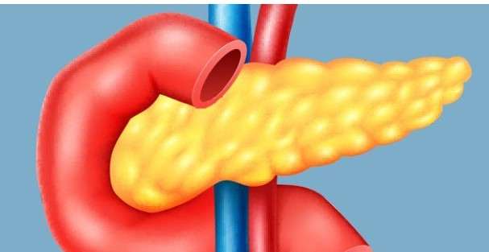
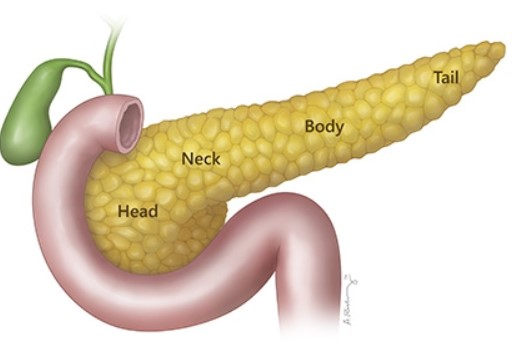
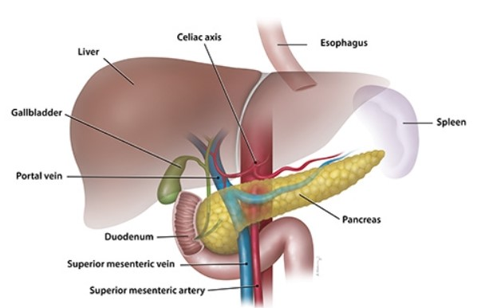
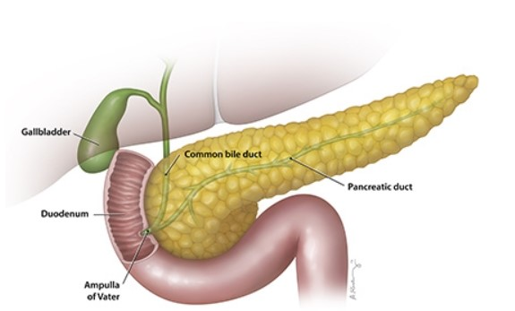

The Pancreas
The Pancreas and Its Functions
The pancreas is an organ located in the abdomen. It plays an essential role in converting the food we eat into fuel for the body's cells. The pancreas has two main functions: an exocrine function that helps in digestion and an endocrine function that regulates blood sugar.
Location of the Pancreas
The pancreas is located behind the stomach in the upper left abdomen. It is surrounded by other organs including the small intestine, liver, and spleen. It is spongy, about six to ten inches long, and is shaped like a flat pear or a fish extended horizontally across the abdomen. The wide part, called the head of the pancreas, is positioned toward the center of the abdomen. The head of the pancreas is located at the juncture where the stomach meets the first part of the small intestine. This is where the stomach empties partially digested food into the intestine, and the pancreas releases digestive enzymes into these contents. The central section of the pancreas is called the neck or body. The thin end is called the tail and extends to the left side.
Several major blood vessels surround the pancreas, the superior mesenteric artery, the superior mesenteric vein, the portal vein and the celiac axis, supplying blood to the pancreas and other abdominal organs.
Almost all of the pancreas (95%) consists of exocrine tissue that produces pancreatic enzymes for digestion. The remaining tissue consists of endocrine cells called islets of Langerhans. These clusters of cells look like grapes and produce hormones that regulate blood sugar and regulate pancreatic secretions.
Functions of the Pancreas
A healthy pancreas produces the correct chemicals in the proper quantities, at the right times, to digest the foods we eat.
Exocrine Function:
The pancreas contains exocrine glands that produce enzymes important to digestion. These enzymes include trypsin and chymotrypsin to digest proteins; amylase for the digestion of carbohydrates; and lipase to break down fats. When food enters the stomach, these pancreatic juices are released into a system of ducts that culminate in the main pancreatic duct. The pancreatic duct joins the common bile duct to form the ampulla of Vater which is located at the first portion of the small intestine, called the duodenum. The common bile duct originates in the liver and the gallbladder and produces another important digestive juice called bile. The pancreatic juices and bile that are released into the duodenum, help the body to digest fats, carbohydrates, and proteins. Endocrine Function: The endocrine component of the pancreas consists of islet cells (islets of Langerhans) that create and release important hormones directly into the bloodstream. Two of the main pancreatic hormones are insulin, which acts to lower blood sugar, and glucagon, which acts to raise blood sugar. Maintaining proper blood sugar levels is crucial to the functioning of key organs including the brain, liver, and kidneys.
Diseases of the Pancreas
Disorders affecting the pancreas include pancreatitis, precancerous conditions such as PanIN and IPMN, and pancreatic cancer. Each disorder may exhibit different symptoms and requires different treatments.
Pancreatitis
Pancreatitis is inflammation of the pancreas that occurs when pancreatic enzyme secretions build up and begin to digest the organ itself. It can occur as acute painful attacks lasting a matter of days, or it may be a chronic condition that progresses over a period of years.
Precursors to Pancreatic Cancer
The exact cause of pancreatic cancer is still unknown, but there are known risk factors that increase the risk of developing the disease. Cigarette smoking, a family history of pancreatic cancer or hereditary cancer syndromes, and chronic pancreatitis are some of these factors. In addition, certain pancreatic lesions such as Intraductal Papillary Mucinous Neoplasms (IPMNs) and Pancreatic Intraepithelial Neoplasia (PanIN) are considered precursors to pancreatic cancer.
Pancreatic Cancer
The most common form of pancreatic cancer is pancreatic adenocarcinoma, an exocrine tumor arising from the cells lining the pancreatic duct. A far less common form, endocrine tumors, account for less than 5% of all pancreatic tumors and are sometimes referred to as neuroendocrine or islet cell tumors. Return to previous page